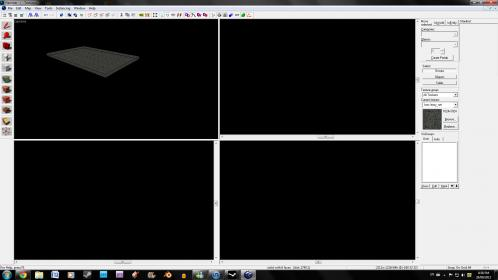

Hey there, hopefully this thread is in the right spot, because I need some help  . I’ve added Black Mesa to my SDK to make some custom maps as I’m sure many people have, but unfortunately I am experiencing a problem with hammer.
. I’ve added Black Mesa to my SDK to make some custom maps as I’m sure many people have, but unfortunately I am experiencing a problem with hammer.
It loads up fine, but I went to start a new map all the ports were blank and black, no grid and no response from the tools. Also in the camera window (top left) I can move around but can’t select anything or at least am not getting a response from selecting anything.
Is there a fix or something for this bug? , because for lack of another word it’s making it very difficult to map …
Thanks!
